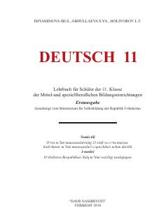

NT11-sinf o'quvchilari uchun nemis tili fani darsligi.
Mazkur darslik umumiy o'rta ta'lim maktablarining 11-sinf o'quvchilari uchun mo'ljallangan bo'lib, nemis tilini CEFR talablari asosida o'rgatishga qaratilgan. Kitobda o'quvchilarning og'zaki va yozma nutq ko'nikmalarini rivojlantiruvchi turli mavzular, leksik-grammatik mashqlar berilgan.